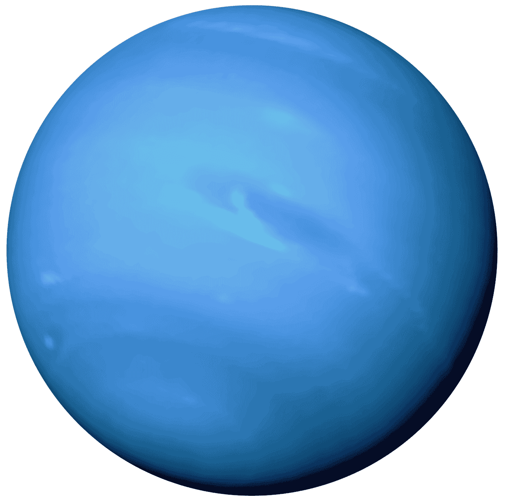

Uranus
Uranus, named after a Greek deity, is an ice giant with an extreme 98-degree axial tilt. It is composed of water, methane and ammonia, giving it its distinct blue-green color.
The only spacecraft to visit Uranus was NASA's Voyager 2, which performed a flyby in 1986, capturing images of the planet.
Pictures

Facts!
-
Unlike the other planets, Uranus is not named after a Roman God. It is named after Greek Οὐρανός, the primordial god of the "sky".
-
The planet's atmosphere can reach -225°C making it the coldest planet in our solar system.
-
While less famous as Saturn's ring system, Uranus has 13 faint rings.